Operating Documentation
Direction 5193574-800, Rev# 22
LightSpeed 7.X Service Methods
Module Version 10.0, Version Date 5/7/10
Operating Documentation |
| Required Persons | Preliminary Reqs | Procedure | Finalization |
|---|---|---|---|
| 1 | Not Applicable | 2 hours | Not Applicable |
The following procedure describes and illustrates the system software loading process commonly referred to as the Load From Cold (LFC). It is important to follow the steps listed below in order.
Table 1: GOC6 Operator Console System Software Revisions
| System Type | Apps Software Revision | OS Software Revision |
| Lighspeed VCT | 08MW33.2 | CTT prod-5.2.13 |
| Lighspeed VCT XTe | 09MW08.10 or 09MW08.11 | CTT prod-5.3.8 |
| Discovery CT750 HD | 09MW29.14 | CTT prod-5.3.10 |
| Last Revised: | 22 October 2009 |
| Item | Qty | Effectivity | Part# | Manufacturer | |
|---|---|---|---|---|---|
| Flat Blade Screw Driver | 1 | - | - | - | |
| Item | Qty | Effectivity | Part# | Manufacturer |
|---|---|---|---|---|
| DVD-RAM Optical Media | 1 | - | - | - |
| Item | Qty | Effectivity | Part# | Manufacturer | |
|---|---|---|---|---|---|
| None | 1 | - | - | - | |
| Condition | Reference | Effectivity |
|---|---|---|
All hardware components of the System must be functional. | - | - |
The Operator Console Front Cover will need to be removed to gain access to the Host Computer DVD Drive. | - | - |
A valid and current System Save State on DVD-RAM Media. System should already been configured for site specific configuration and preferences. If System State disk is missing or not current, some or all of the following must be performed: (1.) A manual configuration using information contained on the System Configuration Data Sheet completed at installation time. (2.) Software Options Licences will need to be manually reloaded. (3.) System Calibrations will need to be performed. | - | - |
Only trained service personnel should service the GE CT Scanner. | - | - |
CTT Operating System, Version 5.3.8
CT Applications Software
Class C Software DVD
Class M Software DVD
Confirm that a current System State DVD-RAM Disk is on site. If unsure of status of the System State, execute System State Save Restore found in the Software Chapter of this manual.
| NOTE: | As a backup to the System State Disk, confirm that a GOC6 Console Information Sheetis available and is completely filled out with site-specific configuration and preference settings. |
Remove all media from MOD and USB Peripheral Towers before starting a Load from Cold.
Unplug the Hospital Network (HSP - J26) cable from rear Console bulkhead.
Label the cable as HSP - J26 (if necessary) and set it aside during LFC.
Remove the Operator Console front cover per the prescribed procedure Console Cover Removal and Installation.
Insert the OS DVD into the tray on the Host Computer DVD-ROM Drive (Illustration 1).
Illustration 1: Host Computer DVD Drive Location

Shutdown and Power Cycle Operator Console:
Using the toolchest, open a Terminal Window.
Type: {ctuser@hostname}halt
Wait for System Halted message to appear on the monitors.
Illustration 2: Monitor Display - System Halted

Cycle Operator Console power (Turn off, then On). Wait 30 seconds for the Operator console to settle down before re-powering the console.
As the Host Computer restarts, the boot process messages appear. After the booting process completes the boot: prompt appears.
At the “boot:” prompt, type the following:
Type: boot: GEHC2
| NOTE: | Special install script iGEHC2 for multi-language keyboard support is no longer required for GOC6 consoles. System Configuration (reconfig) script and the new Linux OS supports multi-language keyboards. |
Illustration 3: Monitor Display - Boot Prompt
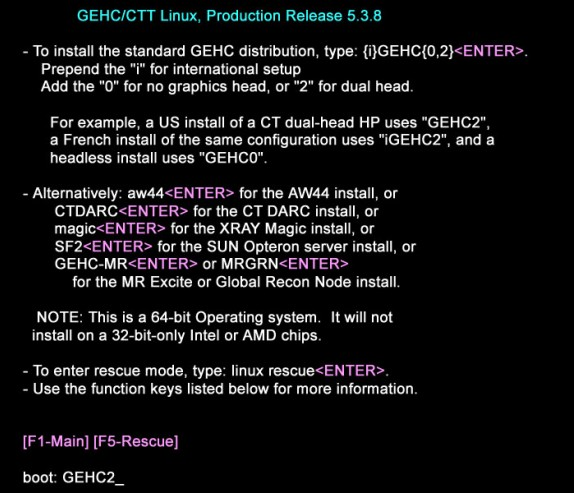
After the OS is loaded on the Host Computer, Complete Window appears.
Illustration 4: Monitor Display - OS Load Complete

Remove the OS DVD from the Host Computer DVD-ROM drive when it ejects and close the tray. Press [Enter] to Reboot.
The Host Computer begins to reboot.
| NOTE: | Do not insert the Applications Software DVD into the Host Computer until the Host Computer has completed rebooting and a Terminal Window appears, displaying the prompt: [root@localhost ~]#. |
Illustration 5: Monitor Display - After OS Load Reboot

Open the tray on the Host Computer DVD-ROM Drive.
Insert the Applications DVD into the DVD-ROM Drive and close the tray.
| NOTE: | The Apps Software CD will open and run automatically. |
Select [Run Command] in the Warning box.
Illustration 6: Apps Run Command Window

Select [Load] in the CT Software Installation window.
Illustration 7: Apps Load Command Window

System State decision for the Install INFO decision box (Illustration 8) will appear.
Select [Yes].
Illustration 8: Install INFO Window
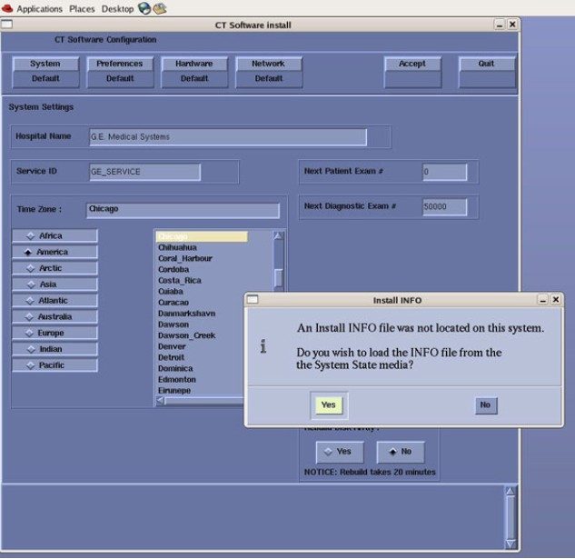
| NOTE: | If a valid and current System State is not available or first time install of software, answer [No] and manually configure the Hardware Tab to define System and Console Type in accordance with the procedure Manually Configuring System INFO. |
Insert the System State DVD-RAM into the Peripheral Tower.
Select [OK].
Illustration 9: Install INFO - System State DVD Installed Window

The Install INFO on the System State disk will be read and if a valid System State Disk has been inserted, an Accept window will appear.
Select [Accept].
Illustration 10: Install INFO - Accept Window

The Install INFO on the System State disk will be displayed and a confirmation window will appear.
Select [Yes].
Illustration 11: Install INFO - Confirm Window

| NOTE: | Install INFO detail in Graphics will differ depending on System type. Verify that the Install INFO detail is correct before selecting [YES]. |
System Install INFO will be now used to create the CT Application load routine. A message will appear briefly stating: “Please make sure the CT application media is in the drive - the system will be rebooted”.
Do not remove the APPS disk at this time. The Operator Console will reboot automatically. A shell window will open and the CT Application software will be loaded.
When completed, the Operator Console will display a window requesting that the console be rebooted. Select [YES].
| NOTE: | Remove APPS disk after selecting [YES]. The DVD Drive will not open until the Host Computer has rebooted. |
Illustration 12: Apps Load Complete- Reboot Window
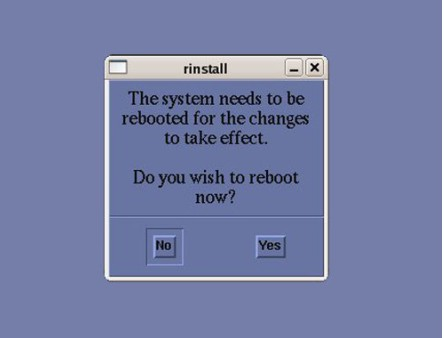
After the Operator Console has rebooted, a window will be displayed stating that the CT Application cannot autostart.
Select [OK].
Illustration 13: Post Apps Load - CT Apps Autostart Window

| NOTE: | If the GOC6 Operator Console is equipped with a VeRB Computer, this procedure can be expedited by performing Section 4.6 VeRB Software Load simultaneously with Section 4.5 DIG Software Load. After executing the following steps in Section 4.5, wait for 10 seconds and launch a second Terminal Window to execute steps in VeRB Software Load . |
Open a Terminal Window, and log on at root:
Type: {ctuser@hostname} su - [ENTER].
Type the root password and press [ENTER].
In the Terminal Window Type: [root@hostname] load_darc_subsystem[ENTER].
A Shell Window will open and the DIG software will be configured and loaded
Illustration 14: Terminal Window - DIG SW Load
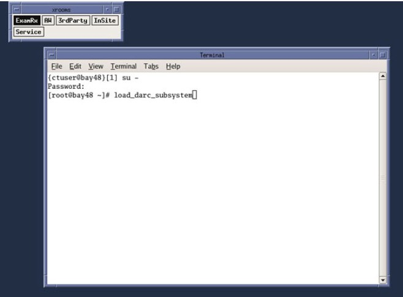
When finished the Shell window will display “DIG load has successfully completed”. Close Shell window.
Illustration 15: Shell Window - DIG SW Load
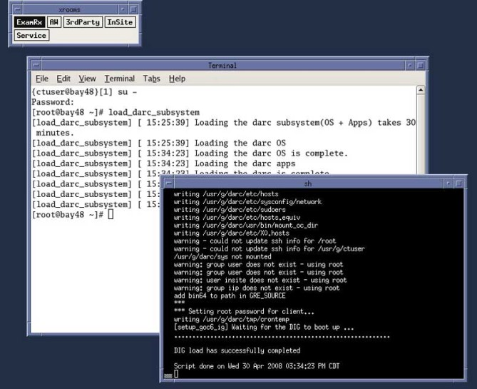
| NOTE: | This step can be skipped if the GOC6 Operator Console is not equipped with a VeRB Computer. |
Open a second Terminal Window, and log on as root:
Type: {ctuser@hostname} su - [ENTER].
Type the root password and press [ENTER].
In the second Terminal Window
Type: [root@hostname] load_verb_subsystem[ENTER].
A Shell Window will open and the VeRB software will be configured and loaded.
Illustration 16: Terminal Window - VeRB SW Load
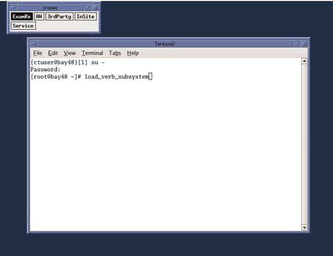
When finished the Shell window will display “VeRB load has successfully completed”. Close VeRB Software Load Shell and Terminal Windows. Leave first Terminal Window open for the following steps:
Illustration 17: Shell Window - VeRB SW Load
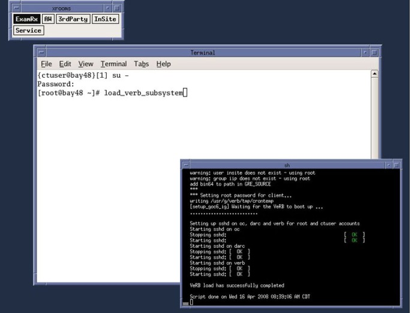
In the remaining open Terminal Window:
Type: [root@hostname] setdate[ENTER].
Set the appropriate date and time values as needed. Follow instructions on screen for setting date and time.
In the Terminal Window, Type: [root@hostname] reboot [ENTER].
Allow the System to come up fully into application Mode. If the CT Applications fail to start automatically, open a Terminal Window.
Type: {ctuser@hostname} st [ENTER].
Insert the System State DVD-RAM Disk into the Peripheral Tower DVD-RAM drive.
Wait until the DVD-RAM drive is ready (i.e., front panel DVD drive LED is no longer lit).
Select: [Service] to access the Common Service Desktop (CSD).
Illustration 18: Desktop Service ICON
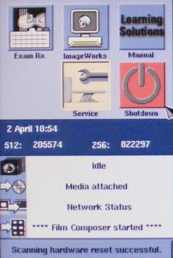
Select: [Utilities Tab].
Illustration 19: Common Service Desktop - Utilities Tab
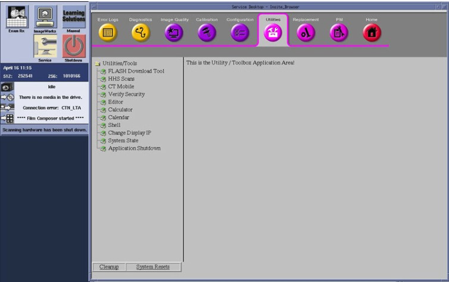
Select: [System State]. The System State Save/Restore screen appears.
Illustration 20: System State - Save/Restore Utility Window
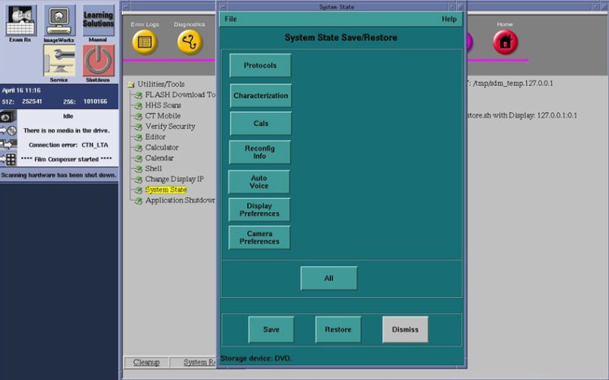
Select [All].
Select [Restore]. The Restore System State box appears.
Select [Yes].
Illustration 21: System State - Restore Confirmation Windows

Verify that the "Restore" of System State was successful. A message at the end of the System State Message Log Window should state: “Save/Restore System State: Completed Successfully.”
Illustration 22: System State - Restore Completed Successfully Window
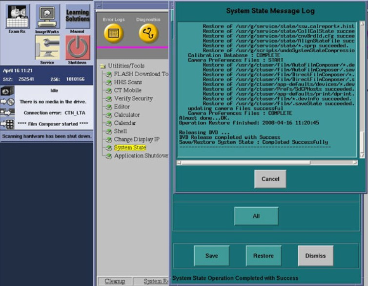
When completed, select [Cancel], then [Dismiss].
Select Shutdown icon on the Desktop and restart the system.
NOTE: If performing a Load From Cold (LFC) for the first time and Software Option Licenses plus site-specific configuration has not been saved to System State, Software Options will need to be loaded manually.
See Install Software Options to load manually.
OR
Software Options licenses will be loaded during Restore System State. Proceed to next section.
On the Common Service Desktop - Utilities Tab, select [Flash Download].
Illustration 23: Common Service Desktop - Utilities Tab, Flash Download

| NOTE: | The Flash Download takes 5 - 30 minutes, depending on which subsystems need firmware updating. |
When the Flash Download Window opens,
Select [Update].
Illustration 24: Flash Download Window

Once the Gantry Hardware Flash Downloads successfully, select [Dismiss].
Close the Common Service Desktop.
Reconnect the Hospital Network cable at the rear of the Operator Console (J26) that was disconnected at the beginning of the LFC.
Select Shutdown icon on the Desktop and restart the system.
Insert the System State DVD-RAM Disk into the Peripheral Tower DVD-RAM drive.
Wait until the DVD-RAM drive is ready (i.e., front panel DVD drive LED is no longer lit).
Select the Service icon to access the Common Service Desktop (CSD).
Select: [Utilities] tab.
Select: [System State]. The System State Save/Restore screen appears.
Select [All].
Select [Save]. The Save System State box appears.
Select [Yes].
Verify that Save System State was successful. A message at the end of the System State Message Log Window should state: “Save/Restore System State: Completed Successfully.”
When complete, select [Cancel], then [Dismiss].
After completing Save System State, store the DVD-RAM Disk in a safe place.
After completing Save System State, store the DVD-RAM Disk in a safe place.
Go to the Functional Checks Chapter > System Scanning Test document to confirm proper operation.
Reinstall Console Front Cover.